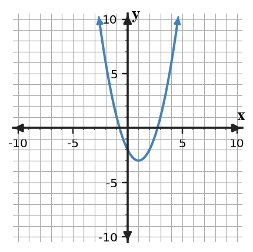
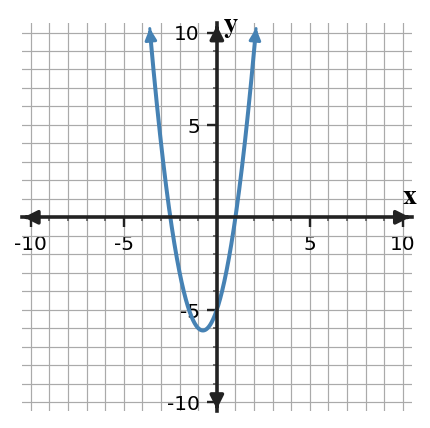

Use the discriminant to predict the number of real solutions for $$2x^2+4x+9=0$$. Then choose whether the quadratic formula is needed and justify your choice.
Use the discriminant to predict the number of real solutions for $$x^2-10x+25=0$$. Then choose whether the quadratic formula is needed and justify your choice.
Use the discriminant to predict the number of real solutions for $$3x^2-2x-8=0$$. Then choose whether the quadratic formula is needed and justify your choice.
Use the discriminant to predict the number of real solutions for $$4x^2+4x+1=0$$. Then choose whether the quadratic formula is needed and justify your choice.
Use the quadratic formula to solve $$3x^2-5x-2=0$$. Show substitution into the formula and simplify as far as possible.
Use the quadratic formula to solve $$2x^2+7x-4=0$$. Show substitution into the formula and simplify as far as possible.
Use the graph to estimate the solutions of $x^2-2x-2=0$. Then use the quadratic formula to find the exact or decimal solutions and compare.

Use the graph to estimate the solutions of $2x^2+3x-5=0$. Then use the quadratic formula to find the exact or decimal solutions and compare.
